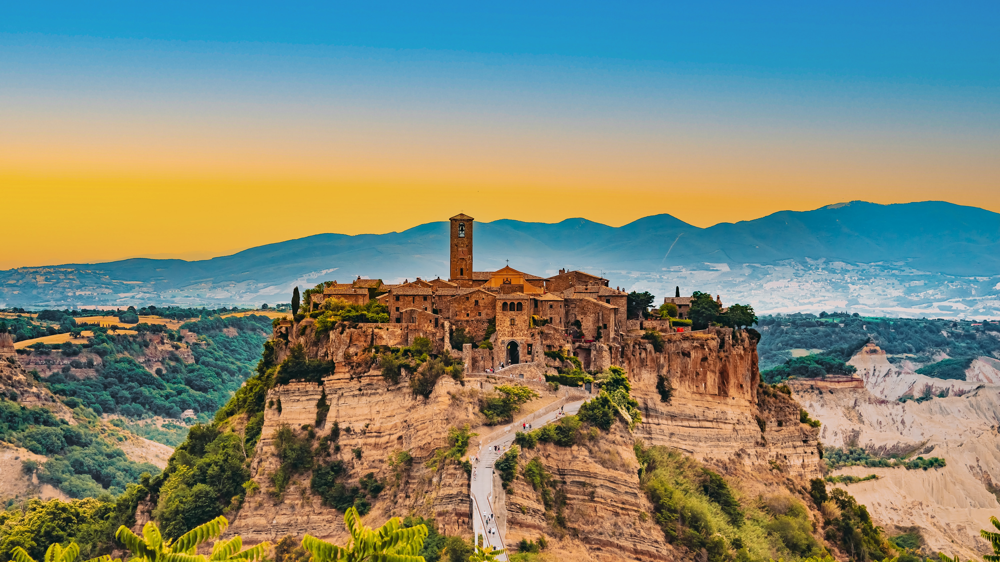

Civita di Bagnoregio

La historia de Civita di Bagnoregio
Civita di Bagnoregio es una pequeña ciudad ubicada en la región de Lazio, en el centro de Italia. La ciudad tiene una historia rica y variada que se remonta a la época etrusca, hace más de 2.500 años.
En la Edad Media, Civita di Bagnoregio fue un importante centro de comercio y cultura en la región, y la ciudad prosperó gracias a su posición estratégica en la cima de un acantilado. Sin embargo, durante los siglos XV y XVI, la ciudad sufrió una serie de terremotos y deslizamientos de tierra que la dejaron en ruinas.
En la actualidad, Civita di Bagnoregio es una pequeña ciudad con una población de menos de 20 habitantes. La ciudad es conocida como "La ciudad que muere" debido a su situación precaria en la cima de un acantilado, y ha sido objeto de esfuerzos de restauración y conservación por parte de las autoridades locales y de grupos privados.
Qué hacer en Civita di Bagnoregio
Civita di Bagnoregio es una ciudad hermosa y única que tiene mucho que ofrecer a los visitantes. Si planeas visitar la ciudad, aquí te dejamos algunas de las cosas que no puedes perderte:
- Explora la ciudad vieja: La ciudad vieja de Civita di Bagnoregio es el corazón de la ciudad y está rodeada por murallas medievales. Aquí encontrarás la Piazza San Donato, la iglesia principal de la ciudad, así como calles empedradas y casas antiguas.
- Visita el Puente del Diablo: El Puente del Diablo es una estructura impresionante que conecta Civita di Bagnoregio con el resto del mundo. Fue construido en el siglo XIV y es uno de los puntos más fotografiados de la ciudad.
- Disfruta de las vistas panorámicas: Civita di Bagnoregio está situada en la cima de un acantilado y ofrece vistas impresionantes del paisaje circundante. Hay varios puntos de observación en la ciudad que ofrecen vistas panorámicas impresionantes.
- Explora la naturaleza circundante: La zona alrededor de Civita di Bagnoregio es conocida por su belleza natural y es perfecta para hacer senderismo y pasear en bicicleta. Hay varios senderos y caminos que serpentean a través de los campos y bosques cercanos a la ciudad.